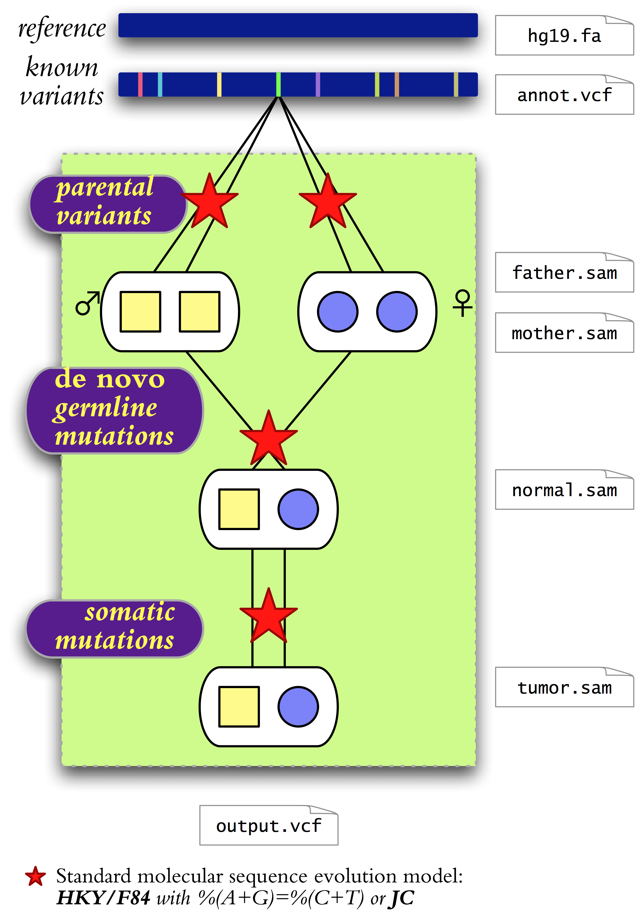

Introduction
QuadGT is a software package for calling single-nucleotide variants in four sequenced genomes comprising a normal-tumor pair and the two parents. Genotypes are inferred using a joint model of parental variant frequencies, de novo germline mutations, and somatic mutations. The model quantifies the descent-by-modification relationships between the unknown genotypes by using a set of parameters in a Bayesian inference setting.
Note that you can use QuadGT on any subset of the four related genomes, including parent-offspring trios, and normal-tumor pairs without parental samples.
The software package assumes a thorough probabilistic model of single-nucleotide variants with the following notable features.
- Multiple alleles. Every locus has four possible alleles (A,C,G,T). Diploid genotypes combine multi-allele frequencies with adjusted heterozygous/homozygous SNP ratios.
- DNA mutation models. Point mutations between related genomes follow standard DNA evolution models. The implemented models include the basic Jukes-Cantor model and a version of the Hasegawa-Kishino-Yano (a.k.a. Felsenstein's F84) model with purine-pyrimidine balance %(A+G)=%(C+T)=50% and four parameters that adjust sequence divergence, transition/transversion ratio and nucleotide composition (GC-content and amino/keto %(A+C)/%(T+G) content).
- Known variants. QuadGT integrates prior information on minor allele frequencies from a chosen variant database such as the NHLBI Exome Sequencing Project's Exome Variant Server.
- Inheritance. Inheritance models span autosomes, sex chromosomes, and mitochondrial DNA. De novo mutations follow a DNA substitution model.
- Basecall qualities. QuadGT's model incorporates alignment quality scores, uses them in inference, and automatically recalibrates score→probability mappings during model training.
- Tumor purity. QuadGT infers tumor purity (normal-tumor sample mixture coefficient) from basecall statistics at somatic mutations, and takes it into account during variant calls.
Availability
Requirements
QuadGT is implemented in 64-bit Java, and thus works on diverse platforms including Mac OS X, Microsoft Windows, and Unix/Linux flavors. The software is packaged in a JAR file (QuadGT.jar) and can be executed in Java versions 1.6 and above.
Installation
Download the JAR file QuadGT.jar.
If you want to work with BAM input files, then you also need the
Picard/SAMTools JDK (version 1.85).
The simplest is to download QuadGT.zip
which bundles QuadGT.jar with the SAMTools library.
(Specifically, QuadGT.zip contains dist/QuadGT.jar and dist/lib/samtools-1.85.jar,
as well as the User's Guide dist/quadgt-usage.pdf.)
Using QuadGT
User's Guide
The User's Guide is available in PDF format as quadgt-usage.pdf. It gives detailed information about command-line options, discusses the mathematical background, and provides some advice on designing variant-calling pipelines.
Plug and play
There is a built-in wizard that helps you set up then proper command-line options through a graphical interface. Execute QuadGT.jar with no arguments to launch the wizard.
% java -jar QuadGT.jar &
Acknowledgements
The QuadGT software package was developed in conjunction with a study led by Daniel Sinnett at the Sainte-Justine UHC Research Centre (Montréal, QC) on pediatric acute lymphoblastic leukemia. The project has been supported by funds from the Terry Fox Research Institute and the Canadian Institutes for Health Research, the François-Karl-Viau Research Chair in Pediatric Oncogenomics, and the National Science and Engineering Research Council.
Authors
The QuadGT software package was developed by Eric Bareke and Miklós Csűrös.
Licensing
QuadGT is distributed under the terms of a modified BSD license, as shown below
Copyright © 2012, 2013 Miklós Csűrös & Eric Bareke
All rights reserved. Redistribution and use in source and binary forms, with or without modification, are permitted provided that the following conditions are met:
- Redistributions of source code must retain the above copyright notice, this list of conditions and the following disclaimer.
- Redistributions in binary form must reproduce the above copyright notice, this list of conditions and the following disclaimer in the documentation and/or other materials provided with the distribution.
- Neither the name of the Université de Montréal nor the names of its contributors may be used to endorse or promote products derived from this software without specific prior written permission.
THIS SOFTWARE IS PROVIDED BY THE COPYRIGHT HOLDERS AND CONTRIBUTORS
AS ISAND ANY EXPRESS OR IMPLIED WARRANTIES, INCLUDING, BUT NOT LIMITED TO, THE IMPLIED WARRANTIES OF MERCHANTABILITY AND FITNESS FOR A PARTICULAR PURPOSE ARE DISCLAIMED. IN NO EVENT SHALL THE COPYRIGHT OWNER OR CONTRIBUTORS BE LIABLE FOR ANY DIRECT, INDIRECT, INCIDENTAL, SPECIAL, EXEMPLARY, OR CONSEQUENTIAL DAMAGES (INCLUDING, BUT NOT LIMITED TO, PROCUREMENT OF SUBSTITUTE GOODS OR SERVICES; LOSS OF USE, DATA, OR PROFITS; OR BUSINESS INTERRUPTION) HOWEVER CAUSED AND ON ANY THEORY OF LIABILITY, WHETHER IN CONTRACT, STRICT LIABILITY, OR TORT (INCLUDING NEGLIGENCE OR OTHERWISE) ARISING IN ANY WAY OUT OF THE USE OF THIS SOFTWARE, EVEN IF ADVISED OF THE POSSIBILITY OF SUCH DAMAGE.